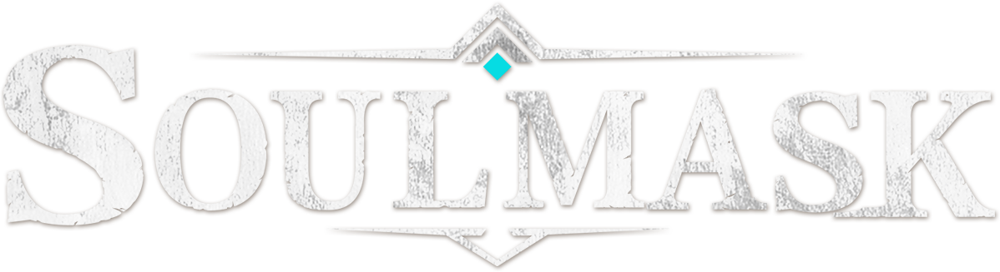

Soulmask: Shifting Sands
Retour aux Aventures programmées
La Guilde s'aventure dans une Égypte antique fantastique où les pouvoirs divins, les technologies mystérieuses et les dangers du désert bouleversent toutes les règles de la survie.
📜 Informations de l'expédition
Origine : Aventure principale 🏆
Statut : Cartographiée 🗺️
📅 Début :
🎮 Type : Survie / Exploration / Construction / Action
👥 Participants : Mk, Elfyre
📖 Histoire de l'aventure
Dans un monde inspiré de l'Égypte antique, où les mythes divins se mêlent à une technologie venue d'ailleurs, la Guilde part explorer des terres désertiques extraordinaires.
Entre îles flottantes, pyramides suspendues et vestiges d'une dynastie oubliée, de nombreux mystères entourent les dieux, la mort et l'immortalité.
Grâce à de nouveaux masques inspirés de divinités telles qu'Horus et Anubis, la Guilde pourra déchaîner des pouvoirs surnaturels, construire sa propre barque solaire et affronter les colosses qui émergent des sables mouvants.
🎯 Objectifs de l'expédition
- 🏜️ Explorer les terres mystérieuses d'une Égypte antique fantastique
- 🚢 Construire et piloter notre propre navire solaire
- 🎭 Maîtriser les pouvoirs des masques divins et percer les secrets d'une dynastie oubliée